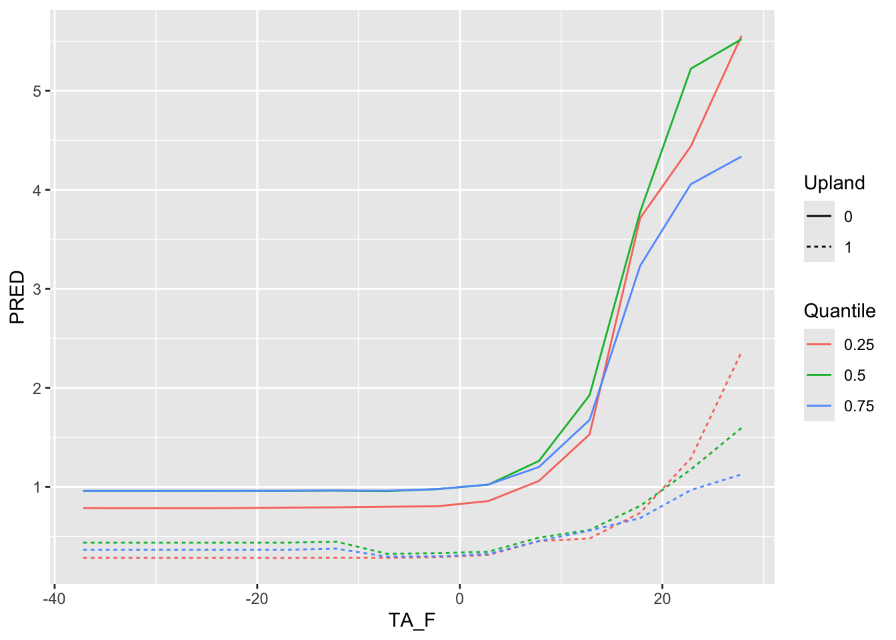

load( 'SensitivityProducts.RDATA')Sensitivity Analysis
A sensitivity analysis is a technique used to understand how changes in the inputs of a mathematical model or system affect the output. In the context of a model, such as a simulation or a statistical model, sensitivity analysis helps to identify which input parameters have the most significant influence on the results.
To begin load the model and dataset we will use for this workshop:
We will use the following packages:
library(randomForest)
library(tidyverse)
library(gtools)
library(ggplot2)In this workshop, we will prepare a sensitivity analysis for the model FCH4_F_gC.rf. Take a look at the model:
FCH4_F_gC.rf
Call:
randomForest(formula = FCH4_F_gC ~ P_F + TA_F + Upland, data = train, keep.forest = T, importance = TRUE, mtry = 1, ntree = 500, keep.inbag = TRUE)
Type of random forest: regression
Number of trees: 500
No. of variables tried at each split: 1
Mean of squared residuals: 4.321792
% Var explained: 35.76The model includes monthly precipitation (P_f), mean temperature (TA_F), and a binary indicator for upland (1= upland ecosystem and 0 = aquatic ecosystem).
Explore the conditions present within the dataset (fluxnet.new) used to build the model. First subset only the variables used in the final model:
model.vars <- fluxnet.new %>% as.data.frame %>% select( P_F, TA_F,Upland)Next, we will summarise the conditions within the dataset by quantiles (0.25, 0.5, 0.75): NOTE THAT YOUR CATEGORICAL VARIABLE WILL NEED TO BE IN THE group_by() FUNCTION!
model.vars.lower <- model.vars %>% group_by(Upland) %>% summarise(P_F = quantile(P_F, 0.25),
TA_F = quantile(TA_F, 0.25 ),
Quantile = as.factor(0.25)) %>% as.data.frame()
model.vars.median <- model.vars %>% group_by(Upland) %>% summarise(P_F = quantile(P_F, 0.5),
TA_F = quantile(TA_F, 0.5 ),
Quantile = as.factor(0.5)) %>% as.data.frame()
model.vars.upper <- model.vars %>% group_by(Upland) %>% summarise(P_F = quantile(P_F, 0.75),
TA_F = quantile(TA_F, 0.75 ),
Quantile = as.factor(0.75)) %>% as.data.frame()Combine the individual Summaries into one dataframe:
summary <- smartbind( model.vars.lower, model.vars.median, model.vars.upper)Now, choose the variable you want to explore: TA_F
Look at the conditions present witing the dataset for TA_F
summary(fluxnet.new$TA_F) Min. 1st Qu. Median Mean 3rd Qu. Max.
-37.188 1.814 10.595 8.874 17.124 31.280 Look at the range in values for TA_F:
range(fluxnet.new$TA_F)[1] -37.18842 31.28010Access each individual range value:
range(fluxnet.new$TA_F)[1][1] -37.18842range(fluxnet.new$TA_F)[2][1] 31.2801Use the range to generate a sequence of values going from the highest to lowest:
TA_F.seq <- seq(range(fluxnet.new$TA_F)[1], range(fluxnet.new$TA_F)[2], by=5 )Create a dataframe:
TA_F.seq.df <- data.frame(TA_F = TA_F.seq )Next we will take the summary, remove the values for TA_F and replace is with the generated range:
TA_F_1AT <- summary %>% select(-TA_F) %>% cross_join(TA_F.seq.df)In this dataframe, all other variables in the model are held at their quantile values and only temperature varies across the range of values observed. This approach is “one-at-a-time”. We choose one variable to vary and hold all others at a specific value. Often the mean is chosen but using the 0.25 , 0.5, and 0.75 quantile helps to visualize what the model would predict across conditions.
Next, use the predict() function to predict values into the dataframe (TA_F_1AT) with the simulated conditions:
TA_F_1AT$PRED <-predict(FCH4_F_gC.rf , newdata = TA_F_1AT)Lets look at the predictions.
ggplot() + geom_point(data =TA_F_1AT , aes( x=TA_F, y=PRED) )Use geom_smooth to visualize the general relationship:
ggplot() + geom_smooth(data =TA_F_1AT , aes( x=TA_F, y=PRED) )`geom_smooth()` using method = 'loess' and formula = 'y ~ x'
Look at the predictions by Quantile and by the Upland indicator:
ggplot() + geom_line(data =TA_F_1AT , aes( x=TA_F, y=PRED, color=Quantile, group=interaction(Quantile, Upland), linetype =Upland) )Now explore the next variable: PA_f
summary(fluxnet.new$P_F) Min. 1st Qu. Median Mean 3rd Qu. Max.
0.00 15.49 43.31 69.37 82.85 1094.02 range(fluxnet.new$P_F)[1] 0.000 1094.017range(fluxnet.new$P_F)[1][1] 0range(fluxnet.new$P_F)[2][1] 1094.017P_F.seq <- seq(range(fluxnet.new$P_F)[1], range(fluxnet.new$P_F)[2], by=100 )
P_F.seq.df <- data.frame(P_F = P_F.seq )
P_F_1AT <- summary %>% select(-P_F) %>% cross_join(P_F.seq.df)
P_F_1AT$PRED <- predict(FCH4_F_gC.rf , newdata = P_F_1AT)
ggplot() + geom_point(data =P_F_1AT , aes( x=P_F, y=PRED) )
ggplot() + geom_smooth(data =P_F_1AT , aes( x=P_F, y=PRED) )`geom_smooth()` using method = 'loess' and formula = 'y ~ x'ggplot() + geom_line(data =P_F_1AT , aes( x=P_F, y=PRED, color=Quantile, group=interaction(Quantile, Upland), linetype =Upland) )Use this same workflow to explore the sensitivity of your groups project’s model. Please provide a presentation explaining how you fit your model (mtry?, ntree?) and how variables where selected (forward versus backward selection). Describe your final model results (variables in the final model, their importance, the %Var, observed versus predicted for testing and training data), including a correlation plot, variance importance plots, and sensitivity analyses. This report will develop into the methods and results portion of your final project.